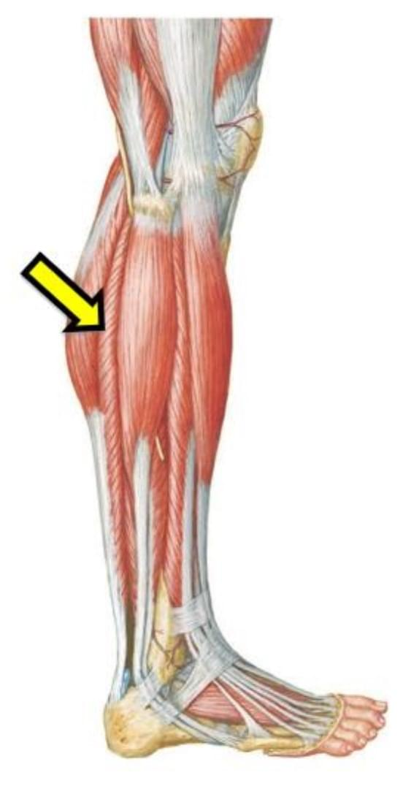
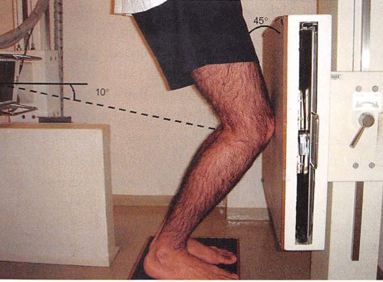

CÂMERA 1TEOT 2024: O músculo indicado na figura a seguir é o:
Eliminados da noite
Para a prova: músculo posterior visto de lado, abaixo do gastrocnêmio: sóleo.
Faltam 84 dias. Fique pronto, prepare-se.
Com o nosso cronograma, você faz o maior número de questões possível sem se esgotar. Nós planejamos tudo para você.
Crie sua conta grátis agora mesmo e conheça outras questões

Fonte da figura: Leite e Faloppa, Propedêutica Ortopédica e Traumatológica.
Que figurinha é essa?
Em relação à propedêutica por imagem do joelho, a imagem a seguir corresponde à incidência radiográfica de
escolha a sua e cole no próximo story
PA em pé, com carga, joelho fletido a cerca de 45° e feixe angulado: mostra o espaço tibiofemoral posterior, onde o desgaste aparece cedo.
Insall, Merchant e Hughston são incidências axiais da patelofemoral.
Com o nosso cronograma, você faz o maior número de questões possível sem se cansar tanto. Nós planejamos tudo para você.
Crie sua conta grátis agora mesmo
ortoquestoes.com.br